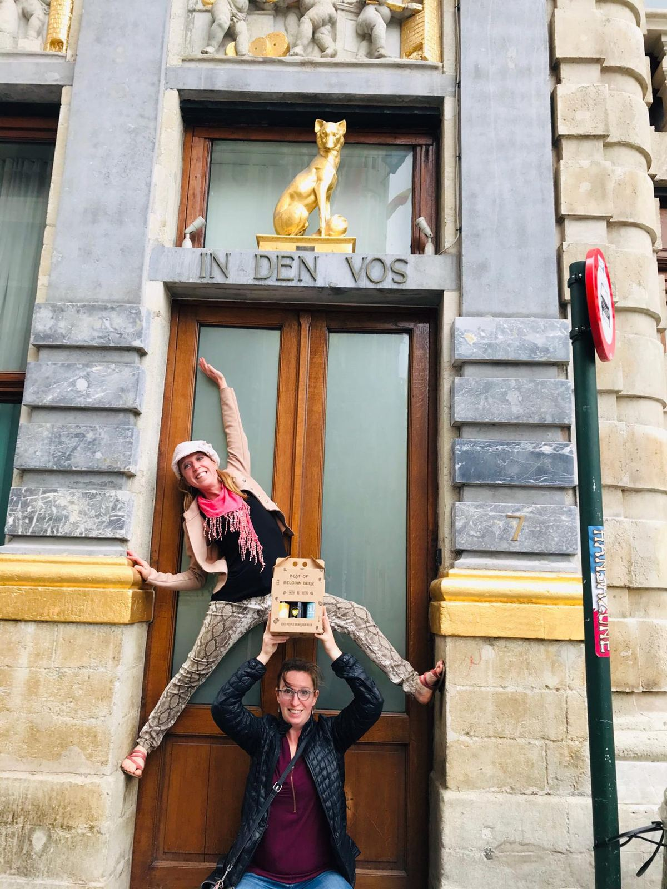
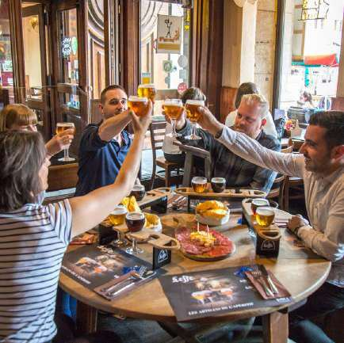

Particuliers
Entre amis, en famille ou en couple.
Jeux de piste, dégustations bière & chocolat et découvertes insolites de Bruxelles : une expérience fun et originale à partager.



Existe aussi en version bière & chocolat.
Jeu de piste
Le jeu de piste bière : les secrets du lambic
En équipe de 4 à 8 personnes, munis d’un roadbook, résolvez une enquête, relevez des défis et dégustez des galopins de bière à l’aveugle dans trois bars emblématiques.
- Énigmes, défis photo et quiz d’observation
- Un animateur vous accompagne jusqu’à la révélation du grand gagnant
- Pas fan de bière ? Optez pour un soft et profitez de l’expérience
Une journée complète
La journée bière à Bruxelles
Authenticité, bière, découverte et plaisir : trois étapes pour découvrir Bruxelles autrement.
Brasserie historique
Visite guidée de la plus ancienne brasserie de Bruxelles, gardienne du lambic et de la gueuze, et dégustation de trois bières.
Déjeuner bruxellois
Un plat au choix, un dessert, deux boissons et un café ou thé, dans un restaurant apprécié des Bruxellois.
Jeu de piste
Ruelles secrètes, monuments incontournables et dégustation à l’aveugle pour terminer la journée en beauté.
Également disponible le lundi, mardi, jeudi et vendredi pour les groupes privés.


Balades & découvertes
Bruxelles, à croquer
Chocolat, bière, BD, histoire ou lieux insolites : d’autres façons de découvrir la ville, accessibles dès 2 personnes.
Ils ont célébré avec nous
Anniversaires, EVG, retrouvailles…
60 €
Carte cadeau
Le cadeau original, à partager.
Valable un an sur l’ensemble du site : jeux de piste, journée bière, dégustations de l’agenda ou dégustation en groupe privé.
- Choisissez le montant de la carte.
- Ajoutez votre message personnalisé lors de la commande.
- Recevez la carte dématérialisée avec son code et les instructions.
- Le code se saisit au paiement, ou s’envoie par e-mail pour une activité sur mesure.

Une question ?
Un groupe privé, une date particulière ?
Nos jeux de piste et dégustations s’organisent aussi à la date de votre choix, pour votre groupe uniquement.